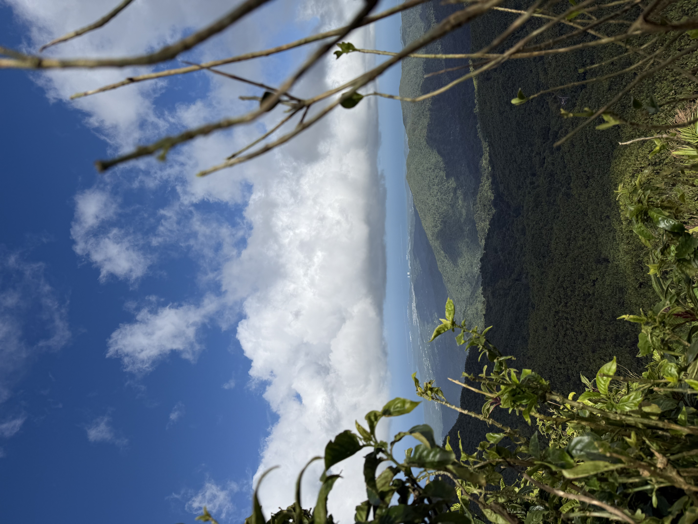
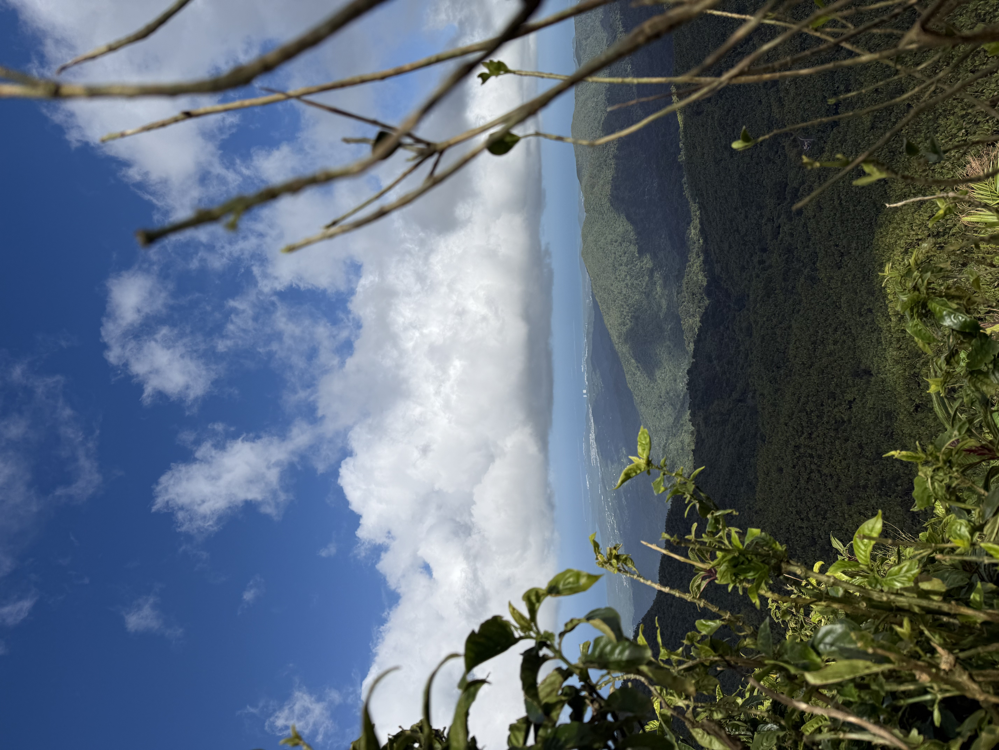

Hey! My name is Conner Pollock. I am originally from Jupiter, Florida. I go to Northeastern University where I am majoring in CS and Business Administration. I am a 4th year, and am graduating this May! After graduating, I planning on moving to Raleigh, North Carolina, where I will be working as a Software Developer for Kimley-Horn. My interests can pretty much be summed up to two things: anything technology related and anything outdoors. With tech., I like to play video games, code, and have even built my own PC. Outdoors, I like hiking, boating, fishing, and freediving.
To expand on one of my interests, hiking, it is something I have gotten into more recently. Having grown up in South Florida, I have always loved to be outside and in nature. Though, Florida is pretty flat so most of the hiking you will find there is fairly easy. So, most of my hiking has come through traveling. Recently, I went to Puerto Rico over Spring Break and got to go hiking through El Yunque National Rainforest. While it wasn't the most challenging hike I've done, I thorougly enjoyed the 8 miles of rainforest and scenic mountain views. Check out some more hikes I've done here! I've included a picture below of my girlfriend and I on that hike in El Yunque, as well as a photo of the view from that hike.
 
